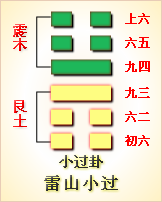

高岛易断 - 25天雷无妄
高岛易断 25 天雷无妄
“无妄
［117］
”，诚也，是即《中庸》“至诚无息”之谓也。《序卦》曰：“复则不妄矣，故受之以无妄。”盖《无妄》之诚，天之道也；《复》而《无妄》，此为“诚之”者，人之道也。为卦《乾》上《震》下，《乾》健也，《震》动也，健而动，动合夫天也，合乎天即诚也。古圣经传皆言诚，无咎二字，独见于《易》。朱子解《中庸》“诚”字，谓“即真实无妄”，而解《易》“无妄”，谓“即实理自然”。要之理之出于自然者，天也，天即诚也，诚即《无妄》也，其旨一也。
无妄：元亨利贞。其匪正有眚，不利有攸往。
“元亨利贞”，是谓四德惟《乾》全具，余卦曰“元亨利贞”者，皆从《乾》来也。“元亨利贞”，统言之，一正而已，正则无妄矣，故曰《无妄》"元亨利贞"。此乃自然之实理，受之于天，不容间以一毫私意，间以私意，即非正矣，非正则妄，妄必多过，故"有眚"也。既已无妄，不宜妄有所往，故曰"不利有攸往"。
《彖传》曰：无妄，刚自外来，而为主于内。动而健，刚中而应，大亨以正，天之命也。其匪正有青，不利有攸往，无妄之往，何之矣？天命不枯，行矣哉？
此卦内《震》外《乾》，"刚"乾也。"刚自外来，而为主于内"，《无妄》以初九为卦主，《震》初九刚从《乾》来，故曰"刚自外来"，就内外卦而言也。动在下，健在上，"动而健"，是动之得其健也。"刚中而应"，谓二五也，九五阳刚中正，即《无妄》之天，六二复以居中得正应之，是应之得其正也。凡《彖传》言"大亨"，即"元亨"，"以正"，即"利贞"。《乾》之四德，天之命也，天之所命者，诚也，正也，即无妄也。命得于天，天必信之，攸往咸宜，吉无不利矣。"其非正"，则是自背夫天之命也，天必不能保之，行将何往？更有所往，往即入于妄矣，妄则逆天，逆天者天不佑，亦安见其可行哉！《程传》释"非正"二字，谓虽无邪心，苟不合正理则妄，知"非正"与不正，迥乎各别，正与"非正"，其辨甚微。"其"字指三上言，三之"灾"，上之"眚"，其失甚细，"非正"二字，正当体认。
以此卦而拟人事，盖此无妄之诚，与生俱来，浑然无私，即所谓天命之性也。卦自《复》来，《复》秉《乾》阳一画，以为"天地之心"，"天地之心"，即《无妄》之真元也，"元亨利贞"四者即此一心。自古圣人，必如尧舜之执中，汤之用中，孔子之时中，斯可谓"大亨以正"，浑全天命者也。下如颜子之已而待克，礼而待复，犹藉人为，其于《无妄》，尚未达一间耳。此外不必显背夫理，即于理稍有所偏，如动而过动，健而过健，刚而过刚，往失其正，即此有眚，天不我佑，往必无可往焉，至此而人事穷矣。卦体内《震》外《乾》，《震》，动也，盖教人以动合天。动以天则为《无妄》，动以人则妄矣。《易》之垂诫著明，六爻之辞，皆取任乎天者也，违即有咎。初爻备卦德之全，行无不吉，志无不遂也。二爻循当然之理，利本不计，往亦无心也。四爻则刚而无私，守之必贞，咎自无也。五爻则中而又正，如其有疾，可"勿药"也。惟三上两爻，不免近于妄矣。三之"灾"，是牵于"得"而来也；五之"眚"，是穷于"行"而得也。此即《彖》所谓"非正有眚"者矣。盖观于初、二、四、五四爻，以人合天，吉无不利；观三上两爻，几微不谨，过即随之。为圣为狂，争此一间，人可不知所勉哉！
以此卦拟国家，盖所谓无妄者，即唐虞授受，危微精一，千古治统之真传也。得之则治，失之则乱，全在大君真实无妄之一心耳。为卦内《震》外《乾》，《乾》君也，天也；《震》动也，行也。《乾》以君合天，是以健而刚；《震》动而能行，是以往有吉。古之帝王恭己南面，无为而治者，惟在此善承夫天命也。故以此而茂对天时，而时无不顺，以此养育万物，而物无不生。时一无妄也，物一无妄也，以无妄对之，以无妄育之。先王法天以行政，一如雷行天下，任时而动，即在无妄之中而已。统观六爻，劝诫昭焉。初爻是温恭充塞，诚至而物自化也，故曰"无妄，往吉"。二爻是不言而信，不动而敬，不期治而自治也，故曰"利有攸往"。三爻，是有意求治，转得此而失彼也，故曰有灾。四爻，是刚柔相济，为能久于其道也，故"无咎"。五爻，是以道自治，不待以乱治乱也，故曰"勿药有喜"。上爻，是好大喜功，行之有过也，故曰"无攸利"。为国家者，保其无妄，祛其"非正"，健而能动，刚而得中，庶几四时行，百物生，应天顺人，德美化行，"大亨以正"，而天下治矣。
此卦内《震》外《乾》，“刚”乾也。“刚自外来，而为主于内”，《无妄》以初九为卦主，《震》初九刚从《乾》来，故曰“刚自外来”，就内外卦而言也。动在下，健在上，“动而健”，是动之得其健也。“刚中而应”，谓二五也，九五阳刚中正，即《无妄》之天，六二复以居中得正应之，是应之得其正也。凡《彖传》言“大亨”，即“元亨”，“以正”，即“利贞”。《乾》之四德，天之命也，天之所命者，诚也，正也，即无妄也。命得于天，天必信之，攸往咸宜，吉无不利矣。“其非正”，则是自背夫天之命也，天必不能保之，行将何往？更有所往，往即入于妄矣，妄则逆天，逆天者天不佑，亦安见其可行哉！《程传》释“非正”二字，谓虽无邪心，苟不合正理则妄，知“非正”与不正，迥乎各别，正与“非正”，其辨甚微。“其”字指三上言，三之“灾”，上之“眚”，其失甚细，“非正”二字，正当体认。
以此卦而拟人事，盖此无妄之诚，与生俱来，浑然无私，即所谓天命之性也。卦自《复》来，《复》秉《乾》阳一画，以为“天地之心”，“天地之心”，即《无妄》之真元也，“元亨利贞”四者即此一心。自古圣人，必如尧舜之执中，汤之用中，孔子之时中，斯可谓“大亨以正”，浑全天命者也。下如颜子之已而待克，礼而待复，犹藉人为，其于《无妄》，尚未达一间耳。此外不必显背夫理，即于理稍有所偏，如动而过动，健而过健，刚而过刚，往失其正，即此有眚，天不我佑，往必无可往焉，至此而人事穷矣。卦体内《震》外《乾》，《震》，动也，盖教人以动合天。动以天则为《无妄》，动以人则妄矣。《易》之垂诫著明，六爻之辞，皆取任乎天者也，违即有咎。初爻备卦德之全，行无不吉，志无不遂也。二爻循当然之理，利本不计，往亦无心也。四爻则刚而无私，守之必贞，咎自无也。五爻则中而又正，如其有疾，可“勿药”也。惟三上两爻，不免近于妄矣。三之“灾”，是牵于“得”而来也；五之“眚”，是穷于“行”而得也。此即《彖》所谓“非正有眚”者矣。盖观于初、二、四、五四爻，以人合天，吉无不利；观三上两爻，几微不谨，过即随之。为圣为狂，争此一间，人可不知所勉哉！
以此卦拟国家，盖所谓无妄者，即唐虞授受，危微精一，千古治统之真传也。得之则治，失之则乱，全在大君真实无妄之一心耳。为卦内《震》外《乾》，《乾》君也，天也；《震》动也，行也。《乾》以君合天，是以健而刚；《震》动而能行，是以往有吉。古之帝王恭己南面，无为而治者，惟在此善承夫天命也。故以此而茂对天时，而时无不顺，以此养育万物，而物无不生。时一无妄也，物一无妄也，以无妄对之，以无妄育之。先王法天以行政，一如雷行天下，任时而动，即在无妄之中而已。统观六爻，劝诫昭焉。初爻是温恭充塞，诚至而物自化也，故曰“无妄，往吉”。二爻是不言而信，不动而敬，不期治而自治也，故曰“利有攸往”。三爻，是有意求治，转得此而失彼也，故曰有灾。四爻，是刚柔相济，为能久于其道也，故“无咎”。五爻，是以道自治，不待以乱治乱也，故曰“勿药有喜”。上爻，是好大喜功，行之有过也，故曰“无攸利”。为国家者，保其无妄，祛其“非正”，健而能动，刚而得中，庶几四时行，百物生，应天顺人，德美化行，“大亨以正”，而天下治矣。
通观此卦，上《乾》下《震》，动合夫天，刚而得中，故名曰《无妄》。无妄者浑全实理，绝无意外期望之谓也。是以循其实理之自然，则往无不利；出乎实理之所非，则动必得咎。虽祸福之来，亦有不测，福自天降，天所佑也；祸而天降，如六三之灾，九五之疾是也；祸而自致，则“非正”之“眚”是也。六爻中，言“吉”，言“利”，言“灾”，言“疾”，言“喜”，言“眚”，皆所谓祸福也。初爻为卦之主，浑全元善，故“吉”。二爻循乎自然，不假造作，故“利”。四爻止所当止，守之以恒，故“无咎”。上爻居卦之终，极而复动，故“有眚”。凡爻象，初动者必终静，初静者必终动。此卦初“往吉”，二往利，皆取其动也；三“灾”，四“贞”，五“疾”，皆勉其守而勿动也；上“有眚”则戒其动之穷也。卦体《乾》健《震》动，故初象多动，动极反静，故终必静也。知夫此，可以谈《无妄》之卦。
《大象》曰：天下雷行，物与无妄，先王以茂对时育万物。
“天下雷行”，阳气勃发，鼓动万物，万物与之共动，蛰虫振，草木萌，有翼者飞，有足者走，无不勃然发育，各正性命，而无有差妄，谓之“物与无妄”。法天之象，以茂对天时者，布顺时之化，以养育万物者，赞生物之功，使时行物生，物物各全其所与，春生养长，咸得其宜，斯吾心中之万物皆备，而天下之万物并育。此所谓尽性尽物也。
【占】 问时运：目下运得其时，百事咸宜，吉。
○ 问商业：正如大旱望雨，响雷一声，人人翘望。货物一到，无不旺销，百般获利，大吉。
○ 问家宅：此宅中时有作响，但无忌碍，屋运甚旺，人口繁盛，吉。
○ 问战征：有风雷席卷之势，务须正正之旗，堂堂之阵，若欲以诈取胜，反恐有祸。
○ 问疾病：是胸有积物，动而未化，宜随时运动，物自消化，“勿药有喜”。
○ 问行人：现时已动身，即日可归。
○ 问婚嫁：两家素有往来，门媚相对，大吉。
○ 问六甲：生男，临时安产，吉。
○ 问失物：或鼓旁，或磨下，或并臼之侧，寻之可得。
○ 问天时：一雨即晴。
高岛易断 初九：无妄，往吉。
《象传》曰：无妄之往，得志也。
初为内卦之主，《震》初之刚，自《乾》而来，故《彖传》曰“刚自外来”。初阳始生，诚一未分，不杂未起，率性而动，动罔不臧，以其动合乎天也；由兹而往，往无不吉焉，故曰“往吉”。《象传》曰“往得志也”，诚无不通，志无不遂，故往而得志也。
【占】 问时运：目下吉，但宜出而有为，不宜杜守家居。
○ 问商业：利行商，不利坐贾。
○ 问家宅：宜迁居，吉。
○ 问战征：宜进攻，吉。
○ 问疾病：宜出外就医，吉。
○ 问行人：或有事他往，吉。
○ 问六甲：生男，来月可产，吉。
○ 问婚姻：赘婿吉。
○ 问失物：宜往外寻之。
【例】 角抵士毛谷村六介者，土州人，体格肥大，重量三十贯余。明治十七年某月，余与友人某氏，见角解于两国回向院，友人特爱毛谷村，请占其进步。缀得《无妄》之《否》。
断曰：此卦上《乾》下《震》，《乾》为父，《震》为长男，有上体大而健，下体小而弱之象。又《震》为足，初爻变《震》体败，必主足疾，恐此人伤足。下爻六二曰“不耕获，不菑畲”，是农而废其业也。由是观之，力士明年殆将废其角解，而转就他业矣。翌十八年，六介果折足而转他业。
高岛易断 六二：不耕获，不菑畲，则利有攸往。
［118］
［119］
《象传》曰：不耕获，未富也。
《乾》为郊野，《震》为禾稼，故爻取农象。耕而有获，菑而有畲，原非意外期望；然以耕而期获，以菑而期畲，心有期望，无妄之望，即是妄也。爻曰“不耕获，不菑畲”，谓当耕则耕，耕未尝有心于获，宜菑则菑，菑未尝有意于畲，任乎先天，不假后起，犹之谋道者非为干禄，修德者非为求名，尽其在我，不计外来。如是则为《无妄》，《无妄》则“利有攸往”，言无妄心，自无妄行，则往无不利也。《象传》曰“未富也”，谓二爻居柔得正，中虚无欲，未尝有心于富也；未富而不妄意于富，此即所谓《无妄》也。
【占】 问时运：目下运得其正，自有意外财饷，大利。
○ 问商业：不谋而获，却得大利，吉。
○ 问家宅：此宅想是承继之产，或为人经管庄舍。
○ 问战征：前途倒戈，有不胜而胜之象。
○ 问疾病：“勿药有喜”。
○ 问婚姻：是招赘之亲。
○ 问行人：在外得利，一时未归。
○ 问六甲：生女。
【例】 明治十四年一月，余浴于热海，同浴者有花族岛津公及成岛柳北等，暇时相与攀谈。既而大隈伊藤进上诸君亦来浴，时大隈君顾众曰：方今俄清两国互争境界，两国派出委员，议论不决，和战未定，各国之所注目也。高岛氏幸为一占。余乃应命，筮得《无妄》之《履》。
断曰：清为我邻，以内卦充之，外卦为俄。《无妄》内卦为《震》，《震》为木，譬犹木槌；外卦为《乾》，《乾》为金，譬犹巨钟。今观清国政府，力尚不足，以清拒俄，譬犹以木槌叩巨钟，巨钟依然，而木槌早已摧矣。故知清必不抗俄，必以和议结局也，明矣。爻辞曰“不耕获，不菑畲”，俄之利，清之灾也。
一时座客，或拍手赞叹，或疑虑不服，后果如此占，使疑者亦服焉。
【例】 东京青山有一富商，自二三世来，分为本末两家，末家常守勤俭，家业益昌，本家不善治产，游惰相承，家业凋落。末家虽屡屡分金相助，如运雪填井，其消立尽。本家计穷，窃欲并吞末家之产，召唤末家主人相商曰：汝家之所有，非汝家所自有也，曩时曾从我本家分而与之也。今本家困乏若此，汝盍归还之乎？汝其了此意乎？末家主人惊愕，虽百方苦陈不听。本家主人，以事不谐，将欲讼之官，末家主人，就余请占其吉凶。筮得《无妄》之《履》。
断曰：此卦上《乾》下《震》，《乾》为金，《震》为木，金为本家，木为末家，末家持木，以击本家之金，末家必不胜，其理昭昭也。爻辞曰“不耕获，不菑畲”，耕者必获，菑者必畲，常也。今日耕而不获，菑而不畲，虽为理之所无，往往为事之所或有。以君家数代勤俭，贮蓄财产，一旦拱手而偿诸本家，固属心之所不甘，故曰“无妄灾也”。今既得此占，宜如其意而让之，独怀资金，另兴一家。爻曰“则利有攸往”，君从此孜孜勉励，当必再致繁昌也。
末家主人，果从余言，举财产让之，另开一户，励精家业，未几又获兴起。
高岛易断 六三：无妄之灾，或系之牛，行人之得，邑人之灾。
［120］
《象传》曰：行人得牛，邑人灾也。
“无妄之灾”，谓非己之所致而灾，天数之灾厄，或有不可免也。六三位不中正，故事出意外，有如“或系之牛”。“系”者而曰“或”，原不知为谁氏之牛也；“行人”，行路之人也，见其牛以为无主也，而窃得之。在邑之人，未之知也，而捕者则必就邑人而诘之，是邑人无故而受灾也，即所谓“无妄之灾”也。三至五《离》，《离》为牛，下互《艮》，《艮》为拘，上互《巽》，《巽》为绳，有系牛之象。《乾》健行，象行人，《震》为守，象邑人。《乾》之行，至上止，上为行人，故上曰“行有眚”，是得牛而遭眚也。《震》之守，属于三，三为邑人，故曰“邑人之灾”。上得其牛，而三罹其灾，是三为“无妄之灾”。上之《象》曰“穷之灾也”，上乃自致之灾，所谓自作之孽也。《象传》曰“邑人灾也”，此意外之灾，惟顺受焉而已。
【占】 问时运：目下运值尴尬，防有意外之事，宜谨慎。
○ 问商业：防他人占利，而己耗财。
○ 问家宅：此宅恐为外人侵占。
○ 问战征：行军得胜，守军防有损败。
○ 问疾病：此病恐是外来人传染，可虑。
○ 问行人：归则归矣，恐家人有灾。
○ 问婚嫁：宜与远人结亲，吉。
○ 问失物：已被行人拾去。
【例】 一日友人某，突然来访曰：仆近与朋友某，共计一商业，书来约今日会晤，今忽以家事混杂谢绝，其中或有变计乎？请劳一筮。筮得《无妄》之《同人》。
断曰：爻辞谓“或系之牛，行人之得，邑人之灾”，按《离》为牛，亦为女，观此知其家必有远来亲友，以妇女寄托也。此女象取《离》卦，必有离绝之事，且《离》为孕，或女已怀孕矣。“行人之得”，是与行人而皆奔也，在某住所，非畜牛之地，故知其必为女也。“系”者，即寄托之谓也，“邑人”者，即君之友也。然此友受此女之寄，所谓“邑人之灾”，恐难免矣。某所称家事混杂，殆即此欤？
友人惊余言奇异而归，后数日，来谢曰：过日占辞，不误一语，悉合事实。
高岛易断 九四：可贞，无咎。
《象传》曰：可贞无咎，固有之也。
四阳刚而居《乾》体，刚而无私，无妄者也。然位当上下之交，初《乾》阳刚犹柔，恐固守未定，或有偶涉于妄者乎？故诫之曰“可贞”。盖以《乾》之健，乘《无妄》之体，更当以《乾》之贞，葆无妄之诚。斯无妄之理，静以存之，固以守之，自无过失矣，故曰“无咎”。《象传》曰“固有之也”，无妄之心，即天心也，秉于生初，非由外铄，故曰“固有”也。
【占】 问时运：目下气运平顺，循分则有获，妄动则有咎。
○ 问商业：坚守旧业，自然亨通。
○ 问家宅：此宅本是祖基，宜永保之，毋坠。
○ 问战征：已占入外卦之地，宜坚守城池，切勿妄进。
○ 问疾病：此时宜安静调养，来月“勿药”而愈。
○ 问行人：一时未归，在外无咎。
○ 问六甲：生男。
○ 问失物：必可复得。
【例】 某贵显来，请占气运，筮得《无妄》之《益》。
断曰：四近尊位，德秉乾刚，正合贵显身位。今占得第四爻，曰“可贞无咎”，在贵显德位俱优，功业素著，无复丝毫妄念；恐民在下，有以妄动干进，全在贵显坚贞而镇定之，得“无咎”也。
高岛易断 九五：无妄之疾，勿药有喜。
《象传》曰：无妄之药，不可试也。
“疾”犹灾也。五动体《坎》，《坎》为疾，故曰疾。疾之来也，有由自致者，有因天时而非自致者，非由自致而疾者，即所谓“无妄之疾”也。“无妄之疾”，如在天为日之食，风之暴，雨之淫，雷之迅，皆一时阴阳之偏，偶触而来，时过则平，未可以药救也。在人，“无妄之疾”亦犹是焉，不容以药治之也，故曰“勿药有喜”。“有喜”，谓疾去而为喜也。当疾之时，以药治之耳，五爻刚中得位，天德全，《无妄》之至者也，复何遗憾？爻之取象于疾者，盖以汤之幽夏台，文之囚羑里，或有为盛德之累者焉。此则谓无妄之疾也，顺以守之，祸患自释，即“勿药”之义焉。《象传》曰“无妄之药，不可试也，”“无妄之疾”，本非真疾，药之反成疾矣，故曰“不可试”，慎之至也。
【占】 问时运：目下气运当正，意外之事，不必介意，全乎在我而已。
○ 问商业：凡一时物价，无故上落，皆无害商业，过时自平，切勿扰动。
○ 问家宅：防有风扫雪压倾圯之患，然无大害，致有喜兆。
○ 问战征：防军队中有时疫流行之患，宜洁净营屯，勿妄用药。无咎。
○ 问行人：恐中途有涉意外之事，然即归来
○ 问讼事：有意外牵涉，不辩自释。
○ 问六甲：生男。
○ 问失物：不寻自得。
【例】 明治二十二年，占某贵显气运，筮得《无妄》之《噬嗑》。
断曰：五爻阳刚中正，下与二应，可谓《无妄》之至者也。今占得此爻，知某贵显德高望隆，复有何病？但道高招谤，或遭意处之嫌，是即“无妄之疾”也。宜勿与辩，逾时自释，若一为计较，转致多事，故曰“无妄之疾，勿药有喜”。
某贵显不用此占，遂酿纷纭，翌年遂罢职闲居。
【例】 明治十五年八月，余弟德右卫门，患大肠痞结，聘医师守永某，乞诊服药，数日不愈。某曰：是非施截解术，不可治也。谋之佐藤国手，余复为占施术之适否，筮得《无妄》之《噬嗑》。
断曰：“无妄之疾”，非自致也。今弟之疾，亦自然而发，非关自致。爻曰“勿药有喜”，盖为不假人治也，是宜安养任其自然，三周间（《震》之数为三八）后，必可愈快。后服补药，不复施术，三周后，果得痊治。
【例】 占明治三十年海军之气运，筮得《无妄》之《噬嗑》。
断曰：《无妄》全卦，卦德为真实无妄，括言之曰正。《彖》辞曰“非正有眚”，眚灾害也，故《说卦》曰“无妄灾也”。今占得五爻，曰“无妄之疾，勿药有喜，”“无妄之疾”，犹言意外之灾也，恐海军中于九十两月中，必有非常之惊异也。此事非关人为，实由天意，非可强也。
后横须贺镇守府长官相浦中将，巡见北海道炭山，余在汽车相晤，告以此占，中将如不介意。然至九月，闻扶桑舰沉没豫海，占兆乃验。
高岛易断 上九：无妄，行有眚，无攸利。
《象传》曰：无妄之行，穷之灾也。
上爻阳居卦之终，为《无妄》之极，极而复行，行必有眚，有何利焉！《彖》辞所谓“非正有眚”，盖指上也。上与三应，三为“邑人”，上为“行人”，三之灾，自上致之；三既被灾，上岂能无眚乎？《象》曰“穷之灾也”，位已上穷，复欲进行，是穷极而为害也。
【占】 问时运：好运已终，宜安守勿动，动则终凶。
○ 问商业：历来贸易，颇称得利，兹值岁终，或当时令交换之际，宜暂静守，切勿再进，防有损耗。
○ 问家宅：此虽旧宅，居之则吉，慎勿他迁，迁则有眚
○ 问战征：地步已极，不可复进，进则有害。
○ 问疾病：必是老年，宜颐养自适。
○ 问行人：即日可归，归后切勿出行。
○ 问六甲：生男。
○ 问失物：恐穷追不得。
【例】 每年一月，余必避寒于热海。明治二十二年一月，静罔县知事关口隆吉君偶巡回县下，同宿汤户某家。关口氏为幕府旧士，尝学于昌平校，夙具才学，维新之际，五棱廓将帅之一也。氏索余占当岁气运，筮得《无妄》之《随》。
断曰：异哉，何其爻象之凶也！《说卦》曰“无妄灾也”，“灾”谓天灾，是天降之灾也。爻辞曰“行有眚，无攸利”，观此爻象，恐于行路中，忽遭祸变。“眚”，损也，必身体大有损伤。《象》曰“穷之灾也”，言灾害之至极也。余就占象直言，吉人天相，君勿过虑，慎之而已。关口氏闻之，面为失色。
后见新闻纸报道，阿部川城之越间汽车冲突，关口知事被伤，政府闻之，遣侍医偌藤桥本医治。余阅报惊曰：果哉关口君，竟罹“无妄之灾”！愈感《易》占之神知，悚然者久之。
一日得静罔警部长相原安次郎氏来函云，知事被灾，果应热海之占，不堪敬服。今欲再占知事之生命如何，烦为一筮回告。筮得《泰》之《大畜》。
爻辞曰：“上六：城复于隍。”《象传》曰：“诚复于隍，其命乱也。”
断曰：《泰》为天地交泰之卦，今占得上爻，是《泰》之将终，转而为《否》之时。“城复于隍”者，倾毙之象；“其命乱”者，谓命之不全也。即以此旨答之。
时见者多怪余断之凶，曰：据医师诊断，有回生之兆，是新闻纸所报也，贵断毋乃过乎？余曰：诸君有疑，请俟诸他日。未几，关口氏讣至，于是当时诸君皆感服《易》占之妙用。
后复晤相原氏，氏曰当时得子返书，已知事不起。怀书往访，知事谓余曰：今春热海游浴之时，高岛氏占象，预诫余之遭难，果若此，殆夫命也。近得医治，言可回生，尚为幸耳。余因叹息，不忍以贵占出示。谈及当时车变云，此日知事至静罔停车场，适将发铁石杂车，知事急麾之，驿吏命暂停，使知事乘之。迨进行二里余，至铁路屈曲处，忽前面汽车蓦地驶来，与之冲突，轰然一声，积载货物，悉飞天外，乘客中即死一人，负伤二人，知事其一也。余本同行，因知事心急，单身乘车，余未知之，得免于祸，幸哉！
翌年春，晤关口氏养子某于热海，曰：亡父平素语足下《易》学，去岁自热海归，每闲居读君《易》断，至《无妄》一卦，常三复不已。
周易 - 25天雷无妄
周易第25卦_无妄卦(天雷无妄)_乾上震下

|

|
 |

|
| 本卦 | 互卦 | 错卦 | 综卦 |
周易第二十五卦详解
无妄卦原文
无妄。元，亨，利，贞。其匪正有眚，不利有攸往。
象曰：天下雷行，物与无妄。先王以茂对时，育万物。
白话文解释
无妄卦：嘉美通泰，卜问得吉兆。行为不正当，则有灾殃，有所往则不利。
《象辞》说：本卦上卦为乾为天，下卦为震为雷，天宇之下，春雷滚动，万物萌发，孳生繁衍，这是无妄的卦象。先王观此卦象，从而奋勉努力，顺应时令，保育万物。
《断易天机》解
无妄卦乾上震下，为巽宫四世卦。无妄卦为天雷震响之象，表示事与愿违，可能会有小的灾祸，但先凶后吉。
北宋易学家邵雍解
不欺不妄，真实至诚；顺乎自然，福禄深宏。
得此卦者，顺其自然，守正道者，诸事皆宜。但行为不检者，必招灾祸。
台湾国学大儒傅佩荣解
时运：正当好运，诸事皆宜。
财运：货到财来，自然开心。
家宅：屋运甚旺；门当户对。
身体：保持运动，自可消化。
传统解卦
这个卦是异卦（下震上乾）相叠。乾为天为刚为健；震为雷为刚为动。动而健，刚阳盛，人心振奋，必有所得，但唯循纯正，不可妄行。无妄必有获，必可致福。
大象：雷动于天，阳气舒发，为真实无虚妄之意。
运势：凡事宜守正，若行为不检者，必招灾祸。
事业：贵自知之明，从个人实际出发，不抱非分之想，脚踏实地，勤奋努力，检点行为，防意外灾祸。不计较得失，诚心追求，待机而动，事业必成。
经商：切勿勉为其难，遵循市场规律，讲究商业道德，屏弃投机心理，勿贪暴利，经过辛勤努力，日积月累，必将成功。
求名：以良好的动机，刻苦努力，丢弃幻想，但问耕耘，不问收获，终将有所获。
婚恋：双方务以诚相待，绝不可抱以轻率的态度，亦不宜急于求成、顺其发展，水到渠成。
决策：精力充沛，富有上进心，可有作为。但务必勤勉努力，诚心诚恳，奋发向上，刻苦钻研。不可因小有成就而得意忘形。不必追求所得，而应追求实干。遵循规律办事，等待时机再行动。尤其应清除非份的念头。这样，可实现自己的理想。
第二十五卦的哲学含义
无妄卦，这个卦是异卦相叠，震在下卦，乾在上卦。乾为天为刚为健；震为雷为刚为动。动而健，刚阳盛，人心振奋，必有所得，但唯循纯正，不可妄行。无妄必有获，必可致福。
从卦象来分析，乾代表天，在上卦，震代表雷，在下卦。表示雷在天的领导下活动，震的活动必须遵循乾德，不准离开乾德而轻举乱动，也就是要遵循正确的思想原则办事，这样才能“无妄”。
无妄卦位于复卦之后，《序卦》之中这样说道：“复则不妄矣，故受之以无妄。”能够返回正道，就不会虚妄了。此卦卦名为无妄。“妄”字的结构为“亡”字与“女”字相结合，本义是指女奴逃亡。《说文》中说：“妄，乱也。”《广韵》中说：“妄，虚妄。”可见“妄”的引申义为虚妄、极不真实、悖乱的意思。所以“无妄”便是不虚妄、不妄为的意思。《序卦传》中说：“复则不妄矣，故受之以无妄。”也就是说，阳气的复生使阴气不再妄为了，所以复卦之后便是无妄卦。而阳气的复生同时也是阴气的灾难开始，所以《杂卦传》中说：“大畜时也，无妄灾也。”
天雷无妄卦乾为天，震为雷，天下雷行，万物不敢妄为，为无妄。无妄象杜不妄为，合乎客观规律，不违事实。什么事情均不妄为时，亨通顺利，否则就会发生祸患，不利于发展。
《象》曰：天下雷行，物与无妄；先王以茂对时育万物。
这句话指出了无妄卦的卦象是震下乾上，好比在天的下面有雷在运行之表象，象征着天用雷的威势警戒万物，并赋予万物以不妄动妄求的本性；从前的君主顺应天命，尽其所能地遵循天时以养育万物的生长。
这便是无妄卦的卦象。从生活常识来讲，雷声很大的雷雨天不宜出门，因为容易遭受雷击。古人很早就发现这一点，于是认为天上打雷是在惩戒坏人，把雷声看作是法律的象征。所以古人会认为在政治局势不稳定而以严法治国的时期，不适合到处走动，以避免不必要的伤害。
周易第二十五卦初九爻详解
初九爻辞
初九。无妄，往吉。
象曰：无妄之往，得志也。
白话文解释
初九：不要妄行非正，吉利。
《象辞》说：没有悖妄的行为，因为所有行动受到意志的控制。
北宋易学家邵雍解
吉：得此爻者，营谋得利。做官的会得到上司的赞许，百姓的爱戴。
台湾国学大儒傅佩荣解
时运：株守不宜，出而有为。
财运：行商有利，坐贾不宜。
家宅：迁居为宜；婿可入赘。
身体：出外就医。
初九变卦
初九爻动变得周易第12卦：天地否。这个卦是异卦（下坤上乾）相叠，其结构同泰卦相反，系阳气上升，阴气下降，天地不交，万物不通。它们彼此为“综卦”，表明泰极而否，否极泰来，互为因果。
初九爻的哲学含义
无妄卦第一爻，爻辞：初九：无妄，往吉。
爻辞释义，本爻辞的意思是：不妄动妄求，前去行事会获得吉祥。初九：无妄，往吉。
象曰：无妄之往，得志也。
经文意思是：没有虚妄，前往吉祥。
象辞意思是:不妄为而前往，心志是会得以实现的。
只要你心中不怀妄念，在做事时遵守规则，就会很顺利的。可是在生活中，
有些人不够理性，分不清希望与妄想的差别，看不清自己。一旦内心的纯正，头脑被妄想所左右，不听劝阻一意孤行，意外的灾祸就会离你不远了。
积极向上本无可非议，所需要强调的是不妄动，不盲目躁行。占得此爻者，正处在事业初期，要坚守正道，并按步骤、按规律一步一步来做，循序渐进，这样才会有所成就。
初九阳爻居于奇位为得位，虽然处于无妄卦的最下爻，但他是无妄卦下卦震卦的双足，震有动的意思，得位而行动，不胡作为，所以这种行动吉祥。初九就好比给商鞅搬木头的人，他遵从告示的内容把木头搬到了北城门，没有做什么不对的事情，所以他因此而受到了奖赏。商鞅的变法也正如这初九交，他言而有信，言必行，行必果，所以他推行的改革成功了。
《象》曰：“无妄之往”，得志也。这是告诉人们，“不妄动妄求，前去行事”，这样就可以实现志愿。
周易第二十五卦九二爻详解
六二爻辞
六二。不耕获，不菑畲，则利有攸往。
象曰：不耕获，未富也。
白话文解释
六二：不耕种就想收获，不开荒地就想种熟地。这些妄谬的行径怎能有利?
《象辞》说：不耕种而想收获，这种空妄的念头不能带来财富。
北宋易学家邵雍解
吉：得此爻者，正当好运，不劳而获。富人进财多，商人出外获利。当官的会升官。读书人会取得佳绩。
台湾国学大儒傅佩荣解
时运：适得正运，意外之财。
财运：不谋而获，大利到手。
家宅：承继家产；招赘之亲。
身体：自然痊愈。
六二变卦

六二爻动变得周易第10卦：天泽履。这个卦是异卦（下兑上乾）相叠，乾为天，兑为泽，以天喻君，以泽喻民，原文：“履（踩）虎尾，不咥（咬）人”。因此，结果吉利。君上民下，各得其位。兑柔遇乾刚，所履危。履意为实践，卦义是脚踏实地的向前进取的意思。
九二爻
的哲学含义
无妄卦第二爻，爻辞：六二：不耕获，不菑畲，则利有攸往。
六二：不耕获，不菑畲，则利有攸往。
象曰：不耕获，未富也。
经文意思是：不耕种而有收获，不开荒而有熟田，那么有利于前往。象辞意思是：不耕而有收获，是因为还不富裕。
爻辞释义：耕：耕作。获：收获。菑：指垦荒。
本爻辞的意思是：不要在刚耕作时就期望立即获得丰收，不在刚开垦荒地时就期望它立即变成良田，若能这样，才有利于前去行事。
六二这一爻是告诉人们，做事要脚踏实地，“休妄想，且诚心”。凡事不要妄想坐收其利，也不要刚投入就立刻想获得高产出，这是不合规律的。
如果你想做事，尽管踏踏实实去做，不要刚一做，就想着如何发大财，发大财后如何扩大规模。有一句话叫“只顾耕耘，不问收获”，你去辛勤劳动，不企求非分的财富，不妄想通过违背规律来快速收到成效，这样坚持下去，对于事业的成功是很有利的。
不用耕耘就可以收获，不用开垦就能得到熟田，这当然是很有利的事情的。古代将第一年开星的田地称为菑，耕种两年的田地称为兴田，耕种三年的田地称为畲。刚开垦出来的荒地杂草丛生，不利于种植，成为畲之后，杂草便少了。可是不开垦荒地怎么会得到人家已经耕种了三年的土地呢？只能是主人的赏赐或用钱买才能得到。所以六二爻便是说前往会得到大的奖赏，所以“利有攸往”。
在古代没有土地的人属于穷人，所以象辞中说：“未富也。”
周易第二十五卦九三爻详解详解
六三爻辞
六三。无妄之灾。或系之牛，行人之得，邑人之灾。
象曰：行人得牛，邑人灾也。
白话文解释
六三：意外的灾难。比喻说有人将牛系在不该系的地方，行人顺手牵牛获意外之得，邑人失牛受到意外之灾。
《象辞》说：行人意外得牛，邑人意外蒙灾。
北宋易学家邵雍解
凶：得此爻者，无妄之灾，破财损身。做官的不宜进取。
台湾国学大儒傅佩荣解
时运：尴尬之期，小心意外。
财运：防备别人，以免耗财。
家宅：外人侵占；远人结亲。
身体：外人传染，小心防治。
六三变卦

六三爻动变得周易第13卦：天火同人。这个卦是异卦（下离上乾）相叠，乾为天，为君；离为火，为臣民百姓，上天下火，火性上升，同于天，上下和同，同舟共济，人际关系和谐，天下大同。
九三爻
的哲学含义
无妄卦：六三：无妄之灾，或系之牛，行人之得，邑人之灾。
无妄卦第三爻，爻辞释义
无妄之灾：指意外事故，没有料想到的事。邑人：指村里人，同乡。
本爻辞的意思是：无缘无故而遭受灾祸，就像有人把一头牛拴在村边道路旁，路过的人顺手把牛牵走，村里的人却被怀疑为偷牛的人了。
六三：无妄之灾，或系之牛，行人之得，色人之灾。
象曰：行人得牛，邑人灾也。
经文意思是：意想不到的灾难，就好比有人系牛于此，被路过的人牵走了，村里的人却遭到了怀疑。
象辞意思是：过路的人得到了牛，而村里的人却被怀疑偷牛而得到了灾难。
周易第二十五卦九四爻详解详解
九四爻辞
九四。可贞，无咎。
象曰：可贞无咎，固有之也。
白话文解释
九四：称心的占问，没有灾难。
《象辞》说：具有贞正的品德，没有灾难，理应如此。
北宋易学家邵雍解
平：得此爻者，宜守旧，图谋有实，不致虚浮。做官的宜守职，勿妄动。
台湾国学大儒傅佩荣解
时运：气运平顺，妄动有咎。
财运：坚守旧业，可以获利。
家宅：保持祖业。
身体：安静调养，下月可愈。
九四变卦

九四爻动变得周易第42卦：风雷益。这个卦是异卦（下震上巽）相叠。巽为风；震为雷。风雷激荡，其势愈强，雷愈响，风雷相助互长，交相助益。此卦与损卦相反。它是损上以益下，后者是损下以益上。二卦阐述的是损益的原则。
九四爻
的哲学含义
无妄卦，第四爻爻辞：九四：可贞，无咎。
无妄卦爻辞释义：本爻辞的意思是：只要能够坚守正道，就不会有灾祸发生。
九四：可贞，无咎。
象曰：可贞无咎，固有之也。
经文意思是：可以保持正道，没有灾难。
象辞意思是：可以保持正道而没有灾难，是九四爻本身固有的品质。
这一爻告诉人们坚守正道，可以化解无妄之灾。这一点很容易理解，村边路旁拴了一头牛，被路过的人牵走了，村里的人都受到了怀疑。但是，那些平日里走得正行得端，品德高尚的人，自然会被排除在外。即使当时人们不太了解，但是根据其日后的行动，知其品行之后，也会将其排除在怀疑范围之外的。
《象》曰：“可贞，无咎”，固有之也。
《象》中指出：“坚守正道，没有灾祸”，是说坚守正道的品德是其本身所固有的，所以，自始至终牢固地坚守正道，才能使自己免遭灾害。
九四这一爻，属于阳爻居阴位，谦卑顺从，以德服人，所以能做到“无咎”。占得此爻者，要注意自己的道德品质，做到心地纯正，不起妄念，这样就不会有什么过错。
九四与初九不应而相敌，并且九四又以刚爻居于柔位，所以处境不是很好。但是九四是无妄卦下互卦艮卦的最上爻，同时又是上互卦巽卦的中爻，所以能够坚守正道以随顺之德而免于灾难。
周易第二十五卦九五爻详解详解
九五爻辞
九五。无妄之疾，勿药有喜。
象曰：无妄之药，不可试也。
白话文解释
九五：患意外之病，不要忙乱服药，自可痊愈。
《象辞》说：出人意外的药物，不可随便服用。
北宋易学家邵雍解
平：得此爻者，营谋有成，病得愈，或有生育之喜。做官的纵有祸难，也会不辩自明，不解自释。
台湾国学大儒傅佩荣解
时运：气运正好，不必介意。
财运：不忧物价，心平气和。
家宅：防备倾倒。
身体：不必担心。
九五变卦
九五爻动变得周易第21卦：火雷噬嗑。这个卦是异卦（下震上离）相叠。离为阴卦；震为阳卦。阴阳相交，咬碎硬物，喻恩威并施，宽严结合，刚柔相济。噬嗑为上下颚咬合，咀嚼。
九五爻
的哲学含义
无妄卦第五爻爻辞：九五：无妄之疾，勿药有喜。
九五：无妄之疾，勿药有喜。爻辞释义，本爻辞的意思是：没有虚妄却生了病，不用吃药也会痊愈。
九五：无妄之疾，勿药有喜。
象曰：无妄之药，不可试也。
经文意思是：无缘无故的疾病，不必吃药治疗，会有喜庆的事情。
象辞意思是：治无缘无故的疾病的药，不可轻易试服。
这一爻以生病为例，来告诫人们处理无妄之灾的办法：若是无缘无故生了病，不可以轻易服药，否则无妄就会变成有妄，会出现别的后遗症。对九五而言，属于阳爻居刚位，又是君主之位，与六二正应，所以不会有什么过错，出现了问题时，单凭自己的时与位就可化解。
占得此爻者，当你被某个问题或麻烦困扰时，会非常烦恼，想放下手上的工作去解决它。结果你会发现，原来没有必要去管它，因为真正的问题并不存在，那只是个无中生有的事情，不去理会它，它也会自行消失的。就像拴在村口路旁的牛被路过的人牵走了，全村的人都受到怀疑，你尽管踏踏实实去做自己的事，没有必要停下来，向每个人去解释自己是清白的。你坚守正道，别人了解你是品德高尚的人之后，自然不会怀疑你了。
在单位，如果有人诬蔑你，或是给你造谣，或者受到了无妄的猜疑，你尽管去做自己的事，不去理会它，用自己的品行来说话，那些事就会不攻自破，自行消失的。
周易第二十五卦上九爻详解详解
上九爻辞
上九。无妄，行有眚，无攸利。
象曰：无妄之行，穷之灾也。
白话文解释
上九：不要胡作妄行！将有灾殃，没有好处。
《象辞》说：谬妄的行为，是绝望无聊的表现。
北宋易学家邵雍解
平：得此爻者，好运已过，不可妄动，否则是非迭生，唯有变通可免祸。做官的妄动有被贬职之忧。
台湾国学大儒傅佩荣解
时运：好运已终，不可妄动。
财运：暂时静守，勿再投资。
家宅：慎勿迁移。
身体：年老颐养。
上九变卦

上九爻动变得周易第17卦：泽雷随。这个卦是异卦（下震上兑）相叠，震为雷，为动；兑为悦，动而悦就是“随”。随指相互顺从，己有随物，物能随己，彼此沟通。随必依时顺势，有原则和条件，以坚贞为前提。
上九爻
的哲学含义
无妄卦第六爻，爻辞：上九：无妄，行有眚，无攸利。
爻辞释义：眚：自身原因造成的祸患。本爻辞的意思是：没有虚妄，行动会遇到灾祸，没有任何好处。
上九：无妄，行有眚，无攸利。象曰：无妄之行，穷之灾也。
经文意思是：不要妄为，行动会有灾害,前往不会有利。
象辞意思是：之所以不要妄为行事，是因为会有末路穷途之灾。
《象》曰：“无妄之行”，穷之灾也。这里指出：“虽然没有妄念，但如有行动却仍然遭受祸殃”，这是由于客观的时遇所造成的灾祸，不以人的意志为转移。
有些时候，即使内心摆脱了虚妄，但是在做事时，由于客观环境或是时机不对，面临许多不利因素，这个时候，你要学会观察环境，等待时机。
上九居于全卦的最上方，处于极亢之位。在这种位置上，更不能胆大妄为，最好少行动，什么事也别做。这就好比一个人，有过激情绪，说话做事都不能保持适中的原则。这种人居于平时还不会有大的损失，但处于政治运动时期，这种人不检点自己，就要大祸临头了。因为极有可能被抓个典型。